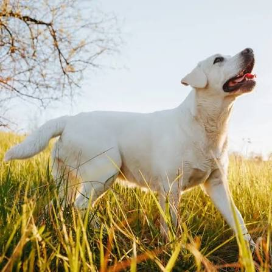
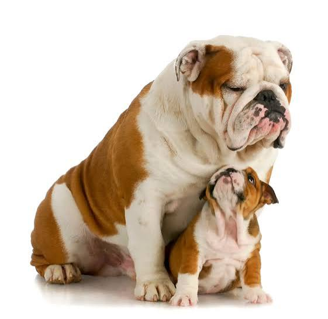

Clube de Patinhas
Tudo sobre cachorros
Como cuidar
Um cachorro precisa de comida certa, água fresca, passeios e carinho. Filhotes passeiam com vacinas em dia.
Alimentação
A alimentação adequada é fundamental para a saúde do seu cachorro. Escolha ração de qualidade e siga as recomendações do veterinário.
- Comida certa
- Água fresca
- Passeios
- Carinho
Passeios
Os passeios são importantes para o bem-estar físico e mental do seu cachorro. Leve-o para passear diariamente, respeitando seu ritmo e necessidades.
- Levar para passear diariamente
- Respeitar o ritmo do cachorro
- Atender às necessidades do cachorro
raças


Dicas para cuidar do seu cachorro
Veja algumas dicas importantes para o cuidado do seu melhor amigo:
- Leve seu cachorro ao veterinário regularmente para check-ups e vacinas.
- Ofereça brinquedos e atividades para estimular a mente do seu cachorro.
- Mantenha a higiene do seu cachorro, incluindo banho e escovação.
- Socialize seu cachorro com outros cães e pessoas para um comportamento equilibrado.
Saiba mais